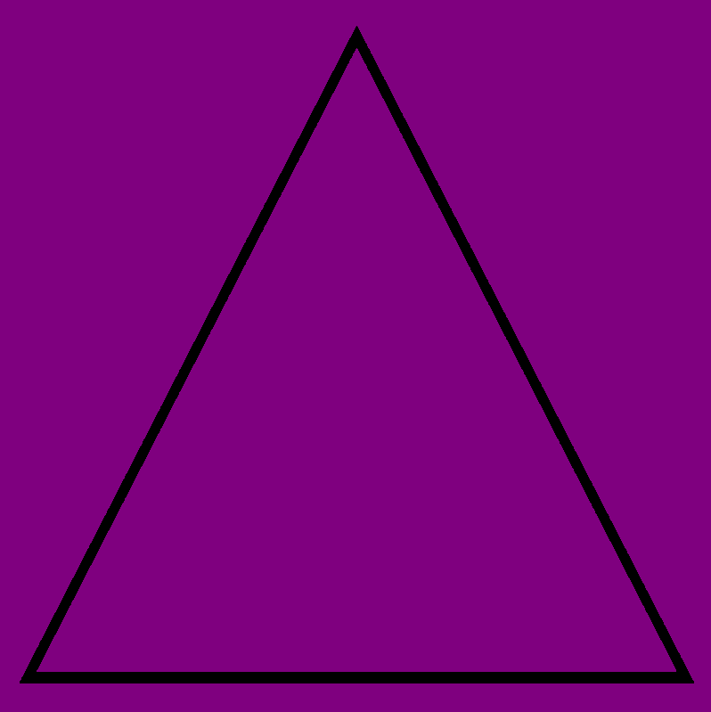
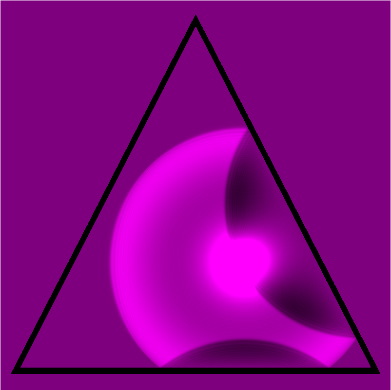

Inputs (Clicks)
(i,j)


let index = i * screen_width + j;
\begin{equation} \begin{bmatrix} \cdots & 0.0 & 0.0 & 0.0 & 10.0 & 0.0 & 0.0 & \cdots \end{bmatrix} \end{equation}
Once passed in, the GPU will use the buffer in the calculation
After the GPU is done, the buffer must be cleared before the next cycle.
